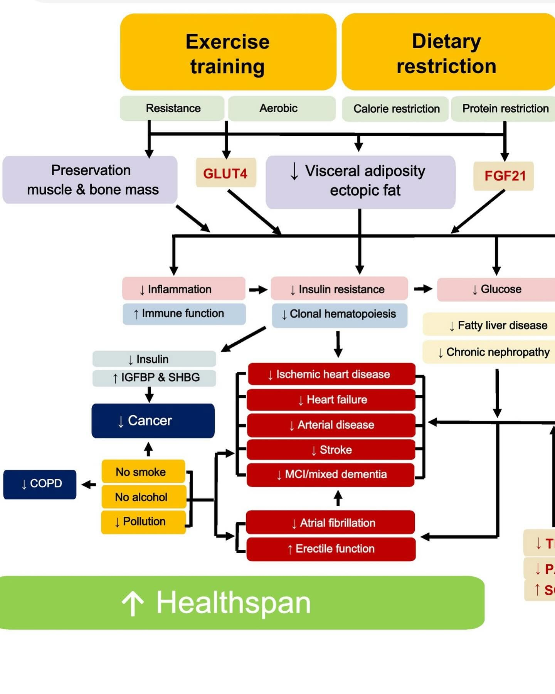
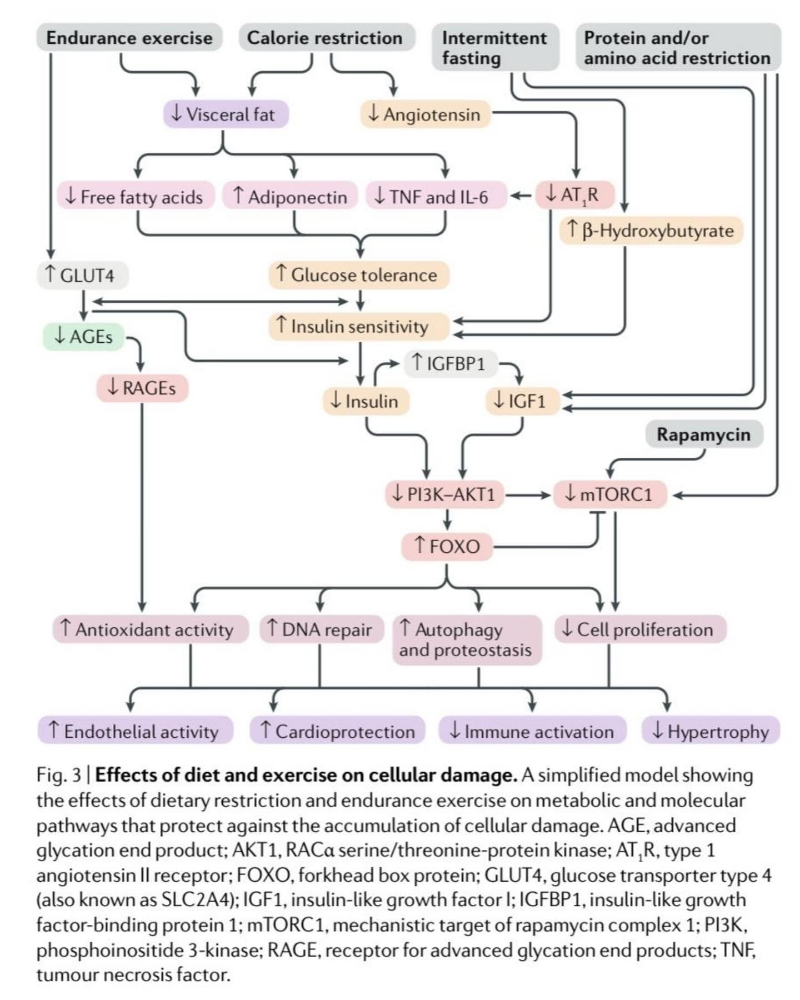

Elevated insulin 2 hours after eating, or when fasting, is the canary in the coal mine for cardio-metabolic diseases.
#insulinHD #insulinresistanceHD #obesityHD
Think You’re Healthy? Elevated Insulin Might Tell a Different Story
🔍 A new study applying The Lancet’s updated obesity definition to 250K+ people found:
- 11% with normal BMI have clinical obesity
- 67% with overweight BMI have preclinical or clinical obesity
- Nearly all with BMI >30 meet criteria for preclinical/clinical obesity
🧠 Obesity is now seen as a chronic, systemic disease—not just a number on the scale. This new definition includes waist measures and signs of organ dysfunction.
📈 What’s often missed:
Elevated fasting or 2-hour insulin—even with normal glucose—is an early, dangerous sign of metabolic dysfunction.
Most labs say fasting insulin <10 µU/mL is normal, but truly healthy people have levels around 2–3 µU/mL, and 2-hour insulin <17 µU/mL.
👉 Insulin at “normal” levels can already mean metabolic stress, quietly activating aging and cancer-promoting pathways.
🧬 Elevated insulin = 🚬 for your metabolism. It damages your body silently—like smoking one puff at a time.
📌 BMI alone is outdated. We must focus on metabolic health, not just weight.
#Obesity #MetabolicHealth #InsulinResistance #ChronicDisease #Aging #TheLancet #AllofUs


